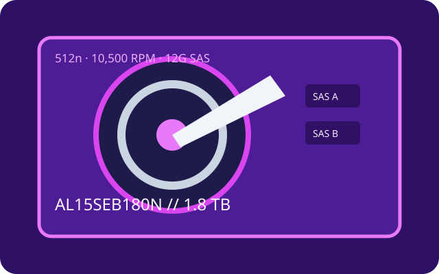

[ IDENTIFIED HDD // MODEL-SPECIFIC RECORD ]
Toshiba AL15SEB180N
1.8 TB 10.5K enterprise-performance SAS disk. This suffix identifies the 512n model; sector options in the AL15 family are not interchangeable.

Recorded specifications
| Exact model | Toshiba AL15SEB180N |
|---|---|
| Capacity | 1.8 TB |
| Sector format | 512n (native 512-byte logical sectors) |
| Interface / ports | SAS-3, 12 Gbit/s, dual-port |
| Rotational speed | 10,500 rpm |
| Cache | 128 MiB buffer |
| Form factor | 2.5-inch, 15 mm class |
| Workload / reliability | Toshiba reports 2,000,000-hour MTTF for the AL15SE series; this population estimate is not an individual service-life promise. The cited sources state no annual workload rating or MTBF; MTTF is not MTBF. |
Host compatibility and qualification
- Use a SAS-capable HBA/RAID controller and SAS backplane/expander; SATA-only controllers/backplanes cannot operate SAS drives. Validate dual-path support, power, 2.5-inch carrier and device qualification.
- Confirm 512n/native sector support, firmware and controller capacity. An older SAS host may negotiate at a lower rate only if the device and OEM configuration are qualified.
- MTTF is a population statistic, not a unit failure forecast. Verify the full part code and actual sector size; keep separate tested backups and monitor health.
Manufacturer sources
- Toshiba — AL15SE series product informationManufacturer specifications for the AL15 family, including capacity, interface, speed and reliability context.
- Toshiba — Enterprise HDD product catalogManufacturer catalog; match exact suffix and sector format to the drive nameplate.